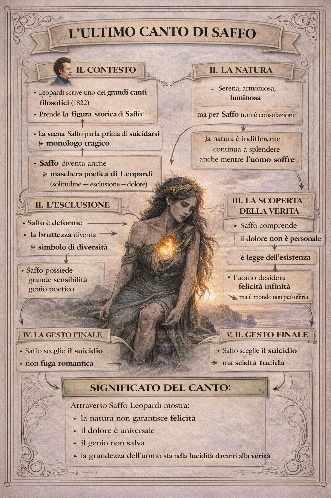

L’ultimo canto di Saffo
1. Contesto dell’opera

L’ultimo canto di Saffo è uno dei grandi canti di Leopardi, composto nel 1822. Il poeta prende una figura storica dell’antichità — Saffo, la grande poetessa greca — e la trasforma in un personaggio tragico. Non si tratta di una ricostruzione storica, ma di una figura simbolica: attraverso Saffo Leopardi esprime una riflessione profonda sulla condizione umana.
La scena è semplice ma potentissima: Saffo parla prima di suicidarsi, gettandosi dalla rupe di Leucade. Il canto diventa così un monologo tragico, un ultimo dialogo con la vita.
In realtà, Saffo è anche una maschera poetica di Leopardi stesso. Il poeta proietta in lei il proprio senso di esclusione, la consapevolezza del dolore e la distanza tra l’anima e il mondo.
2. La bellezza della natura e l’esclusione di Saffo
Il canto si apre con una descrizione della natura serena e luminosa. Il cielo, la notte, il paesaggio appaiono pieni di armonia.
Ma proprio questa bellezza diventa dolorosa per Saffo.
La natura appare perfetta, mentre lei si sente esclusa dalla felicità del mondo. Non è la natura ad essere crudele in modo diretto: è semplicemente indifferente. Continua a splendere, anche mentre l’uomo soffre.
Qui emerge una delle intuizioni più profonde di Leopardi: la natura non è costruita per la felicità dell’individuo.
3. La bruttezza e l’esclusione
Leopardi immagina Saffo come fisicamente deforme. Questo elemento non è solo realistico: ha un significato simbolico.
La bruttezza diventa il segno della diversità, della condizione di chi non riesce a trovare posto nel mondo.
Saffo possiede un’anima grande, sensibile, capace di poesia, ma proprio questa sensibilità la rende più vulnerabile al dolore. Il genio non la salva: anzi, rende la sofferenza più profonda.
Qui Leopardi introduce un tema centrale del suo pensiero: la natura distribuisce felicità e dolore senza giustizia.
4. La scoperta della verità
Durante il canto, Saffo arriva a una consapevolezza radicale.
Il problema non è soltanto la sua condizione personale. Il dolore non è un caso isolato: è la legge stessa dell’esistenza.
L’uomo nasce con un desiderio infinito di felicità, ma il mondo non può soddisfarlo. Da questa contraddizione nasce l’infelicità umana.
In questa riflessione si intravede già il passaggio verso il pessimismo cosmico: il dolore non dipende dalla società o dalla storia, ma dalla struttura stessa della realtà.
5. Il suicidio come scelta tragica
Alla fine del canto Saffo decide di morire.
Ma Leopardi non presenta questo gesto come un atto di disperazione sentimentale. Non è il suicidio romantico di chi soffre per amore.
È una scelta tragica e lucida.
Saffo non chiede pietà e non si lamenta. Guarda in faccia la propria condizione e decide di uscire da una vita che non può offrirle felicità.
Qui emerge ciò che molti critici chiamano stoicismo leopardiano: la dignità di chi accetta la verità senza illusioni e senza piegarsi.
7. - La ribellione - lo stoicismo
6. Il significato del canto
L’ultimo canto di Saffo non è solo la storia di una poetessa antica. È una riflessione universale sulla condizione umana.
Attraverso Saffo, Leopardi mostra che
- la natura non garantisce felicità;
- il dolore non è un’eccezione, ma una condizione dell’esistenza;
- il genio e la sensibilità non proteggono dalla sofferenza;
l’unica grandezza possibile è la lucidità davanti alla verità.
7. Conclusione per gli studenti
In questo canto Leopardi raggiunge una delle espressioni più alte della sua poesia tragica.
Saffo è una figura sconfitta, ma non umiliata. Non può cambiare il destino, ma può decidere come guardarlo.
Ed è proprio questa dignità della coscienza che rende il canto così potente: anche in un mondo indifferente, l’uomo può ancora scegliere la lucidità e la coerenza.